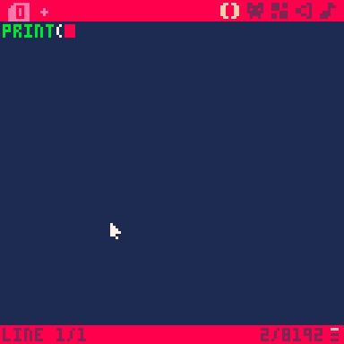
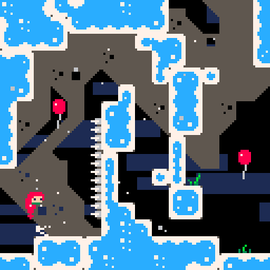
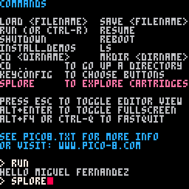

Miguel Fernandez's PICO-8 Webpage
Here I am using print to print my name:

Here I am playing a Celeste Emulator using PICO-8:

Here I am using splore in order to explore all the games avaiable on PICO-8:

Lastly, here is a picture of all my folders: